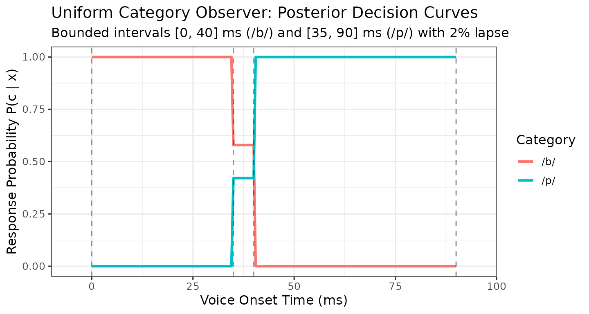

Contributor Guide: Extending MVBeliefUpdatr and Adding Model Families
T. Florian Jaeger
Source:vignettes/extending-mvbeliefupdatr-adding-model-families.Rmd
extending-mvbeliefupdatr-adding-model-families.Rmd1. Overview & Architectural Philosophy
MVBeliefUpdatr uses R’s S7 object-oriented programming system to provide a modular, strongly typed, and extensible framework for cognitive models of speech perception and categorization.
All model families in MVBeliefUpdatr follow a two-tier structural hierarchy:
MVBU_Object
├── MVBU_CategoryRepresentation
│ ├── MVG_CategoryRepresentation (Multivariate Gaussian)
│ ├── UVG_CategoryRepresentation (Univariate Gaussian)
│ ├── MUVG_CategoryRepresentation (Multiple Univariate Gaussians)
│ ├── NIW_CategoryRepresentation (Normal-Inverse-Wishart hyperprior)
│ ├── NIX_CategoryRepresentation (Normal-Inverse-Chi-squared hyperprior)
│ ├── MNIX_CategoryRepresentation (Multivariate NIX hyperprior)
│ └── Exemplar_CategoryRepresentation(Non-parametric exemplar memory)
└── MVBU_CognitiveModel
├── MVG_IdealObserver (Static multivariate observer)
├── UVG_IdealObserver (Static univariate observer)
├── MUVG_IdealObserver (Static multi-univariate observer)
├── NIW_IdealAdaptor (Dynamic NIW belief updater)
├── NIX_IdealAdaptor (Dynamic NIX belief updater)
├── MNIX_IdealAdaptor (Dynamic MNIX belief updater)
└── Exemplar_Model (Non-parametric exemplar model)Observers vs. Adaptors
- Ideal Observers represent perceptual agents with fixed, known category distributions. They evaluate likelihoods directly from category parameters (e.g., mean and covariance ) and form posterior beliefs using Bayes’ rule.
-
Ideal Adaptors represent perceptual agents with
uncertainty over category parameters. They maintain distributional
beliefs (hyperpriors such as NIW, NIX, or MNIX) and incrementally update
these beliefs when exposed to novel perceptual evidence via
update_template()or Stan inference. - Exemplar Models represent categories via collections of stored exemplars and evaluate category activations using perceptual distance metrics.
Because downstream operations (posterior(),
likelihood(), categorize(),
evaluate_model()) dispatch polymorphically on the abstract
base classes MVBU_CategoryRepresentation and
MVBU_CognitiveModel, any new model family
automatically inherits full workflow support as soon as it implements
the core S7 method contract.
2. The S7 Model Family Contract
To introduce a new cognitive model family into
MVBeliefUpdatr, the fundamental requirement is
registering an MVBU_Family descriptor:
- An
MVBU_Familyregistration viaregister_model_family()andnew_mvbu_family(), defining:-
density_function: category likelihood or probability density -
sampling_function: observation sampling closure -
expected_moments: point-summary expected moments (mu,Sigma,weights) - (Optional)
marginal_moments: predictive dispersion moments - (Optional)
stanmodel: list bundlingstanmodel_nameandstanfit_class(orNULLif no Stan model is used).
-
Category representations and cognitive models can be instantiated
directly using the base constructors
new_category_representation() and
new_cognitive_model() without declaring any custom S7
classes.
Optionally, for formal library extensions or strict slot validation,
contributors may define dedicated S7 classes: 2. A category
representation class inheriting from
MVBU_CategoryRepresentation. 3. A cognitive model container
class inheriting from MVBU_CognitiveModel.
Core Pipeline Capabilities Inherited via Registration
Once a model family is registered, all tier-level operations automatically delegate to the family descriptor:
| Capability | Generic Function | Mechanism |
|---|---|---|
| Family Introspection |
get_family(),
get_family_name()
|
Resolves registered MVBU_Family
descriptor |
| Observation Sampling | sample_observations() |
Dispatches to fam@sampling_function
|
| Expected Moments |
get_expected_mu(),
get_expected_sigma()
|
Dispatches to fam@expected_moments
|
| Likelihood, Posterior & Categorization |
likelihood(), posterior(),
categorize()
|
Uses category likelihood function & Bayes rule |
| Quantitative Evaluation | evaluate_model() |
Evaluates log-likelihood / accuracy |
3. End-to-End Worked Example: Uniform Bounded Category Observer
To illustrate how easy it is to add a novel model family, let us implement a complete, working Uniform Bounded Category Observer for 1D cues. In this family, each category represents an acoustic interval with constant likelihood within the bounds and zero outside.
Step 1: Define the Category Representation Class
A single category representation stores the category’s lower bound and upper bound :
Uniform_CategoryRepresentation <- S7::new_class(
"Uniform_CategoryRepresentation",
parent = MVBU_CategoryRepresentation,
properties = list(
lower = S7::class_numeric,
upper = S7::class_numeric
),
validator = function(self) {
if (length(self@lower) != 1L || length(self@upper) != 1L) {
return("lower and upper bounds must be single numeric scalars.")
}
if (self@lower >= self@upper) {
return("lower bound must be strictly less than upper bound.")
}
NULL
}
)Step 2: Register the Model Family
We register the Uniform family using
register_model_family() and new_mvbu_family().
We provide closures for likelihood evaluation, random observation
sampling, and expected moments:
uniform_family <- new_mvbu_family(
name_short = "Uniform",
name_long = "Uniform Bounded Category Observer",
name_details = list(
CategoryRepresentation_name = "Uniform_CategoryRepresentation",
CategoryTemplate_name = "Uniform_CategoryRepresentationTemplate",
CognitiveModel_name = "Uniform_IdealObserver",
CognitiveModelList_name = "Uniform_CognitiveModelList"
),
density_function = function(x, rep, log = FALSE) {
stats::dunif(x, min = rep@lower, max = rep@upper, log = log)
},
sampling_function = function(rep, n = 1L, with_replacement = TRUE, ...) {
matrix(stats::runif(n, min = rep@lower, max = rep@upper), ncol = 1L)
},
expected_moments = function(rep) {
list(
mu = (rep@lower + rep@upper) / 2,
Sigma = matrix((rep@upper - rep@lower)^2 / 12, 1L, 1L),
weights = 1
)
}
)
register_model_family(uniform_family)Step 3: Instantiate Representations and Template
Optionally, we can instantiate representations for, e.g., two
phonetic categories (/b/ and /p/). Notice that
we do not need to supply a manual likelihood closure:
MVBeliefUpdatr automatically delegates category likelihood
evaluation to the registered family’s density_function:
cat_b <- Uniform_CategoryRepresentation(
lower = 0,
upper = 40,
metadata = list(label_information = list(cue = "VOT", category = "/b/"))
)
cat_p <- Uniform_CategoryRepresentation(
lower = 35,
upper = 90,
metadata = list(label_information = list(cue = "VOT", category = "/p/"))
)
uniform_template <- new_category_representation_template(
list("/b/" = cat_b, "/p/" = cat_p)
)
uniform_template
#> <MVBU_CategoryRepresentationTemplate>
#> Categories (2): /b/, /p/
#> Cues (1): VOT
#> Representations (2):
#> /b/: Uniform_CategoryRepresentation
#> /p/: Uniform_CategoryRepresentationStep 4: Define Cognitive Model Class and Constructor
Next, define Uniform_IdealObserver inheriting from
MVBU_CognitiveModel. The package internal helper
.new_family_cognitive_model() handles default parameter
validation, lapse configuration, and noise behaviors:
Uniform_IdealObserver <- S7::new_class(
"Uniform_IdealObserver",
parent = MVBU_CognitiveModel
)
new_uniform_ideal_observer <- function(
category_template,
decision_rule = "sampling",
category_prior = NULL,
lapse_rate = 0,
lapse_bias = NULL,
Sigma_noise = NULL,
noise_treatment = "no_noise",
lapse_treatment = "no_lapses",
metadata = list()
) {
MVBeliefUpdatr:::.new_family_cognitive_model(
category_template = category_template,
category_representation_class = Uniform_CategoryRepresentation,
model_class = Uniform_IdealObserver,
family_label = "Uniform",
decision_rule = decision_rule,
category_prior = category_prior,
lapse_rate = lapse_rate,
lapse_bias = lapse_bias,
Sigma_noise = Sigma_noise,
noise_treatment = noise_treatment,
lapse_treatment = lapse_treatment,
metadata = metadata
)
}Step 5: Automatic Pipeline & Sampling Delegation
Notice what we did not have to write: there was no
need to implement individual S7 methods for
sample_observations() across single representations,
templates, and cognitive models! Because Uniform is
registered in the family registry, all tiers delegate observation
sampling directly to uniform_family@sampling_function:
# Sampling directly from a single category representation
set.seed(123)
sample_observations(cat_b, n = 3L)
#> # A tibble: 3 × 2
#> category VOT
#> <fct> <dbl>
#> 1 /b/ 31.5
#> 2 /b/ 11.5
#> 3 /b/ 16.4
# Sampling across an entire template
sample_observations(uniform_template, n = 4L)
#> # A tibble: 4 × 2
#> category VOT
#> <fct> <dbl>
#> 1 /b/ 18.1
#> 2 /p/ 72.3
#> 3 /p/ 66.5
#> 4 /b/ 38.34. Verifying Workflow Parity
Let us instantiate our new observer and demonstrate that it immediately supports the standard package workflows:
observer <- new_uniform_ideal_observer(
uniform_template,
decision_rule = "proportional",
lapse_rate = 0.02
)
observer
#> <Uniform_IdealObserver>
#> Categories (2): /b/, /p/
#> Cues (1): VOT
#> Decision rule: proportional
#> Category prior: /b/: 0.5, /p/: 0.5
#> Lapse rate: 0.02 (treatment: no_lapses)
#> Perceptual noise: none (treatment: no_noise)
#> Category representations (2):
#> /b/: Uniform_CategoryRepresentation
#> /p/: Uniform_CategoryRepresentationSimulating Observations
set.seed(42)
sim_df <- sample_observations(observer, n = 4L)
sim_df
#> # A tibble: 4 × 2
#> category VOT
#> <fct> <dbl>
#> 1 /b/ 25.7
#> 2 /b/ 29.5
#> 3 /b/ 20.8
#> 4 /p/ 42.4Computing Posterior Probabilities with posterior()
test_stimuli <- data.frame(VOT = c(10, 25, 37.5, 60, 85))
post_probs <- posterior(observer, new_data = test_stimuli)
cbind(test_stimuli, post_probs)
#> VOT /b/ /p/
#> 1 10.0 1.0000000 0.0000000
#> 2 25.0 1.0000000 0.0000000
#> 3 37.5 0.5789474 0.4210526
#> 4 60.0 0.0000000 1.0000000
#> 5 85.0 0.0000000 1.0000000Notice how VOT = 37.5 falls in the overlap region
ms, yielding balanced category competition between /b/ and
/p/.
Categorization Decisions with categorize()
The generic categorize() automatically applies the
model’s decision rule:
# Proportional response probabilities
categorize(observer, new_data = test_stimuli, decision_rule = "proportional")
#> response_category response_probability
#> 1 /b/ 1.0000000
#> 2 /b/ 1.0000000
#> 3 /b/ 0.5789474
#> 4 /p/ 1.0000000
#> 5 /p/ 1.0000000
# Deterministic optimal choice (criterion)
categorize(observer, new_data = test_stimuli, decision_rule = "criterion")
#> [1] "/b/" "/b/" "/b/" "/p/" "/p/"Quantitative Model Evaluation with
evaluate_model()
We can evaluate the model’s log-likelihood on empirical or simulated response data:
eval_data <- data.frame(
VOT = c(12, 28, 55, 78),
response = c("/b/", "/b/", "/p/", "/p/")
)
log_lik <- evaluate_model(
model = observer,
x = eval_data[, "VOT", drop = FALSE],
response_category = eval_data$response,
method = "log_lik"
)
log_lik
#> [1] 0Introspecting the Model Family
The generic get_family_name() and
get_family() seamlessly resolve the registered family
descriptor from the model or its underlying representations:
get_family_name(observer)
#> [1] "UNIFORM"
get_family(observer)
#> <MVBeliefUpdatr::MVBU_Family>
#> @ family_names :List of 3
#> .. $ name_short : chr "UNIFORM"
#> .. $ name_long : chr "Uniform Bounded Category Observer"
#> .. $ name_details:List of 4
#> .. ..$ CategoryRepresentation_name: chr "Uniform_CategoryRepresentation"
#> .. ..$ CategoryTemplate_name : chr "Uniform_CategoryRepresentationTemplate"
#> .. ..$ CognitiveModel_name : chr "Uniform_IdealObserver"
#> .. ..$ CognitiveModelList_name : chr "Uniform_CognitiveModelList"
#> @ density_function : function (x, rep, log = FALSE)
#> @ sampling_function : function (rep, n = 1L, with_replacement = TRUE, ...)
#> @ expected_moments : function (rep)
#> @ marginal_moments : NULL
#> @ sufficient_statistics_function: NULL
#> @ stanmodel : NULLExtracting Category Moments and Sufficient Statistics
Because uniform_family provides
expected_moments, expected moments (means and covariances)
can be extracted directly from the observer:
get_expected_mu(observer)
#> $`/b/`
#> [1] 20
#>
#> $`/p/`
#> [1] 62.5
get_expected_sigma(observer)
#> $`/b/`
#> [,1]
#> [1,] 133.3333
#>
#> $`/p/`
#> [,1]
#> [1,] 252.0833For empirical observations in a data frame, sufficient category
statistics are calculated using
get_sufficient_category_statistics():
obs_df <- sample_observations(observer, n = 30L)
get_sufficient_category_statistics(obs_df, cues = "VOT")
#> # A tibble: 2 × 6
#> category n mean cov css uss
#> <fct> <int> <list> <list> <list> <list>
#> 1 /b/ 15 <dbl [1]> <dbl [1 × 1]> <dbl [1 × 1]> <dbl [1 × 1]>
#> 2 /p/ 15 <dbl [1]> <dbl [1 × 1]> <dbl [1 × 1]> <dbl [1 × 1]>Visualizing Category Likelihoods and Decision Landscapes
We can easily plot the category likelihoods and decision
probabilities using ggplot2:
grid_df <- data.frame(VOT = seq(-5, 95, by = 0.5))
grid_post <- posterior(observer, new_data = grid_df)
plot_df <- data.frame(
VOT = rep(grid_df$VOT, 2),
Probability = c(grid_post[, "/b/"], grid_post[, "/p/"]),
Category = rep(c("/b/", "/p/"), each = nrow(grid_df))
)
ggplot(plot_df, aes(x = VOT, y = Probability, color = Category)) +
geom_line(linewidth = 1.1) +
geom_vline(xintercept = c(0, 35, 40, 90), linetype = "dashed", alpha = 0.4) +
theme_bw(base_size = 12) +
labs(
title = "Uniform Category Observer: Posterior Decision Curves",
subtitle = "Bounded intervals [0, 40] ms (/b/) and [35, 90] ms (/p/) with 2% lapse",
x = "Voice Onset Time (ms)",
y = "Response Probability P(c | x)"
)
[!NOTE] Plotting Distributional Assumptions: Built-in category contour plotting (
plot_categories()) draws elliptical confidence regions based on the second-order moments provided byfam@expected_moments(r). For non-Gaussian distributions where ellipses do not capture the true geometry (such as bounded uniform intervals or non-convex regions), directggplot2plotting (as shown above) provides full visual fidelity.
5. Adding Sequential Belief Updating (Adaptor Models)
If the model family represents an Ideal Adaptor
(Bayesian belief updating model over parameters), implement
update_template():
S7::method(update_template, My_IdealAdaptor) <- function(
x,
exposure_data,
...
) {
# 1. Extract sufficient statistics from exposure data
# 2. Update category parameters analytically or via MCMC
# 3. Return an updated S7 model instance with a clean cache:
# x@category_template@representations <- updated_representations
# x@cache <- list()
# x
}Key principles for adaptors: - Clean Cache
Invariant: Always reset @cache <- list() when
returning an updated model to ensure pure functional copy-on-modify
semantics. - Label Preservation: Ensure
cue_labels and category_labels remain strictly
synchronized across exposure updates.
6. Contributing to Core: Why Promote Custom Families to Built-in Classes?
While the lightweight family registration pattern
(new_mvbu_family() +
new_category_representation()) allows full runtime
simulation, categorization, and likelihood evaluation without defining
new S7 classes, contributing a family as a permanent built-in class in
MVBeliefUpdatr core brings compelling engineering and
usability advantages:
-
IDE Tab Completion and Discoverability: Concrete
typed constructors (such as
new_uvg_category_representation()ornew_niw_category_representation()) expose explicit, named function arguments. Modern IDEs (RStudio, Positron, VS Code) provide instant tab completion for parameters (e.g.,mu,Sigma,kappa,nu), eliminating guesswork about slot names. - Strict Property Validation at Object Construction: Dedicated S7 classes enforce mathematical domain constraints at the moment of object creation (e.g., covariance matrices must be positive-definite and symmetric; degrees of freedom ; probabilities and weights must sum to 1). This catches specification bugs early before costly model fitting or simulation loops run.
- Compile-Time Dispatch and High-Performance Specialization: Core classes allow specialized S7 method implementations (such as Cholesky-factorized distance calculations or analytical Stan priors) to dispatch instantly without reflective inspection of property names.
-
Stan Generative Models and C++ Compilation:
Built-in classes can couple directly with compiled Stan models
(
.stanprograms), enabling fast Bayesian parameter inference via MCMC or variational inference that is unavailable for arbitrary dynamic R closures.
If you have developed a useful custom family and wish to contribute it as a permanent built-in class, consult the companion developer guide: Contributor Guide: Adding Permanent Model Families.